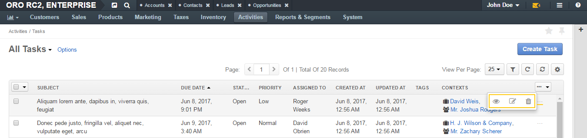

On the upper-left of the page, you can see the name of the selected grid view. The only grid view available by default for tasks is All Tasks (all available tasks are displayed).
In the upper-right part of the page, you can see the Create Task action button. Click it to add a new task. See the Add a Task action descriptions.
The other grid controls are common for all grids in the application.
| Field | Description |
|---|---|
| SUBJECT | Short, one-phrase description of what the task is about. |
| DUE DATE | The day and time when the task must be completed. |
| STATUS | The phase of work on the task. |
| PRIORITY | Nominates an order in which the task should be managed. Can be High, Normal, or Low. Higher-priority tasks should be managed first. |
| ASSIGNED TO | The user that is responsible for doing the work related to the task. |
| CREATED AT | The day and time when the task has been created. |
| UPDATED AT | The day and time when the task information has been changed. |
| TAGS | A list of tags added to the task. |
| CONTEXTS | Links to the records that somehow relate to the task. |
To view, edit, or delete a task, click the ellipsis menu at the end of the row, and then click the corresponding icon.
To view a task, you can also click the corresponding row itself.
You can also perform inline editing to change one or more task details directly from the grid.
See the action descriptions:
You can delete multiple tasks from this page. See the Delete Multiple Tasks action description.